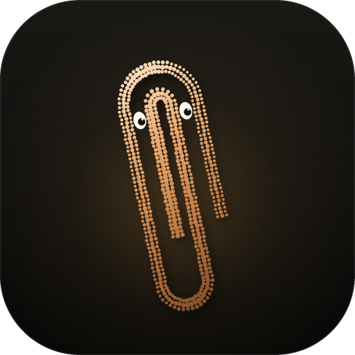

Agentes, conversas e definições ficam em ~/.clipy. Exportas tudo num clique.
Agentes que ficam contigo.
O Clipy junta o Claude Code e o OpenCode que já usas numa equipa de agentes que vive num mapa à tua volta. Trabalham no teu computador, com as tuas contas, e mostram-te o que estão a fazer.
Grátis e de código aberto · Apache-2.0 · os teus dados não saem do teu computador
Mapa da equipaRevólver de sistemasAprovaçõesRotinasMemóriaTelemóvelCanais
Claude CodeOpenCodeNo teu computadorCom as tuas contasSem telemetriaCódigo aberto
A equipa
Uma equipa, não mais um separador.
Tu ao centro, as equipas à volta, cada uma com um Chief. Pedes uma coisa e vês o trabalho viajar pela linha até ao agente certo: um enxame de partículas, com uma pílula a dizer o que leva, e a resposta a voltar pelo mesmo caminho.
O revólver
Cada agente, os seus sistemas.
Perfil, engine, computador, apps, aprovações, rotinas, memória e atividade giram à volta dele como as câmaras de um tambor. O que escolhes abre no sítio do chat; fechas e o chat volta.
As ferramentas
O que fazem, à vista.
Ficheiros, editor, comandos, browser e telemóvel abrem no lugar do agente, que fica no canto com a cara do que está a fazer. O chat não sai do sítio.
Sabes o que fazem sem abrir nada.
Cada agente é uma personagem de partículas que olha para o teu rato. A cara diz o que está a fazer. Toca numa para a acordar.
A conversa
Tu aprovas o que importa.
Vês cada passo do trabalho. Antes de mexer em ficheiros ou correr comandos, o agente pergunta: permitir, recusar ou permitir sempre. Quando precisa de uma decisão, dá-te opções.
- Três níveis de aprovação por agente
- Contexto, modelo e esforço à mão
- Ditado e anexos na caixa de escrever
Mostram-te
Quando fazem algo, mostram.
Uma página, um PDF, uma imagem ou o ecrã do computador, ao lado do agente e à escala real. Se for mesmo importante, pedem-te para olhar.
Entre eles
Falam uns com os outros.
O Clipy pede à Nova, a Nova responde, e tu vês o pedido e a resposta a viajar no mapa. Quem recebe dá uma volta e acende-se. Em canais, passam a vez com @Nome.
Um minuto
O Clipy em ação.
As definições
Tudo à volta de ti.
Engines, chaves, telemóvel, aparência, uso e dados giram à volta do Clipy, tal como os sistemas de cada agente. Nada abre por cima do mapa.
No bolso
E vão contigo.
Uma app para Android que o próprio computador te entrega por QR, e a mesma app no navegador do iPhone. Equipas, canais, conversas e aprovações, sem lojas nem contas: fala diretamente com o teu computador, em casa ou pelo Tailscale.
- Uma chave por telemóvel, revogável no computador
- Aprova pedidos onde estiveres
- Android nativo · iPhone no ecrã principal
Cinco céus
Escolhe o céu deles.
Brasa, Noite estrelada, Pôr do sol, Aurora e Oceano. Experimenta aqui: esta página muda contigo.
Teu, do princípio ao fim.
Usa as CLIs que já tens, com as tuas sessões. O Clipy nunca guarda palavras-passe.
Cada agente pergunta antes de mexer no que importa, ao nível que escolheres.
Sem conta Clipy, sem servidores nossos, sem telemetria. O telemóvel liga-se direto ao computador.

Põe a tua equipa a trabalhar.
Windows e Mac, com a app do telemóvel incluída. Precisas de pelo menos uma engine com sessão iniciada: Claude Code ou OpenCode.

$ npm i -g opencode-ai # ou: npm i -g @anthropic-ai/claude-code
$ git clone https://github.com/Duartepxto/Clipy && cd Clipy
$ pnpm install && pnpm dev